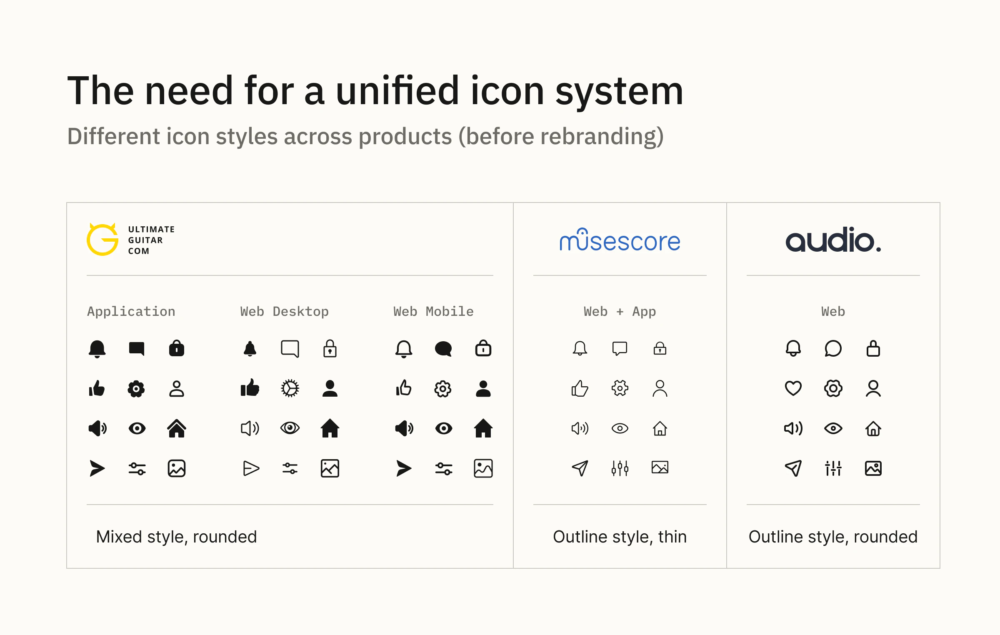
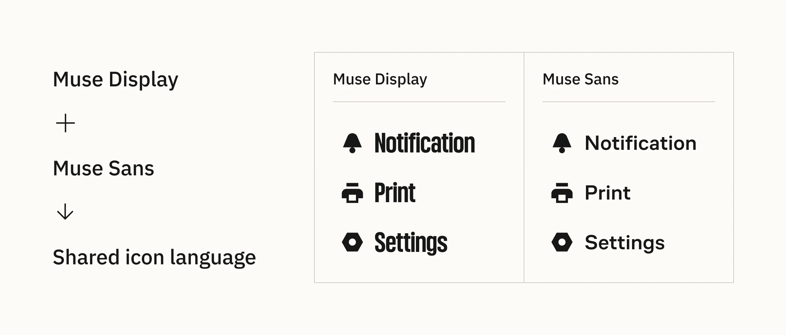
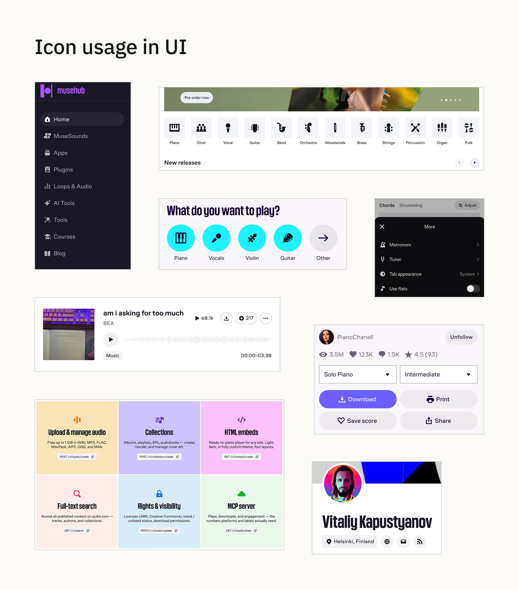
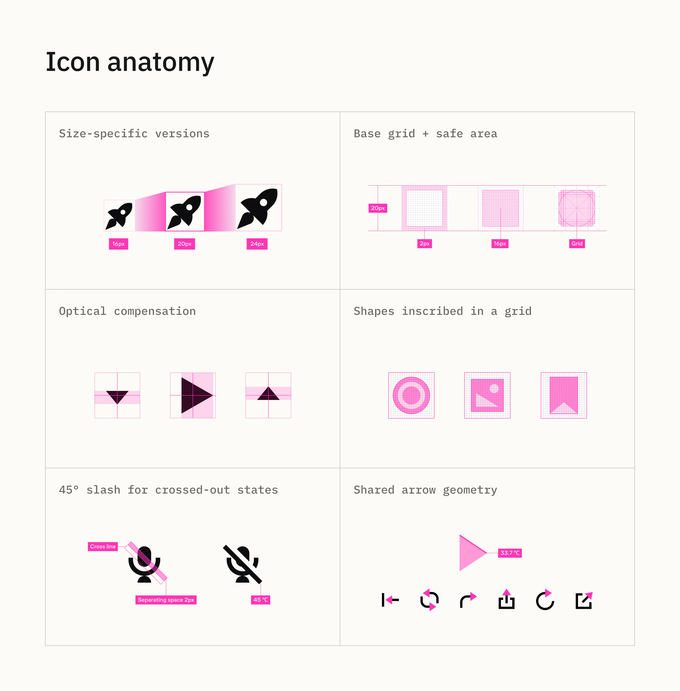
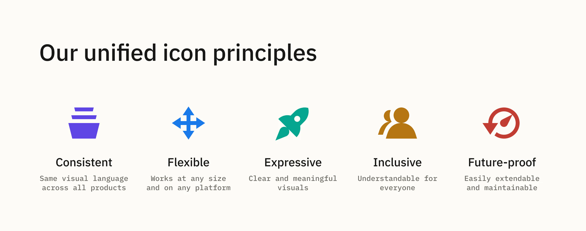
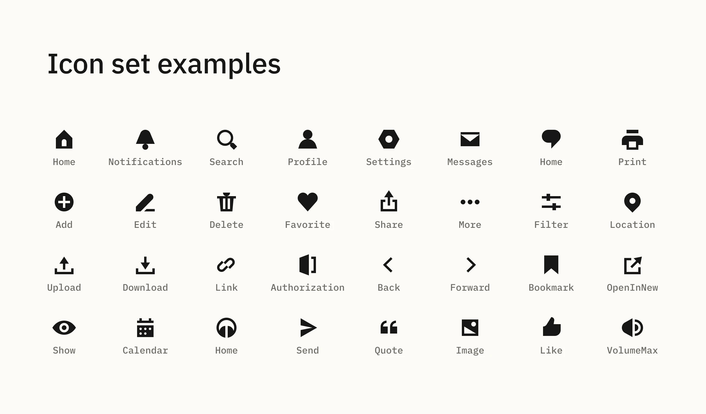
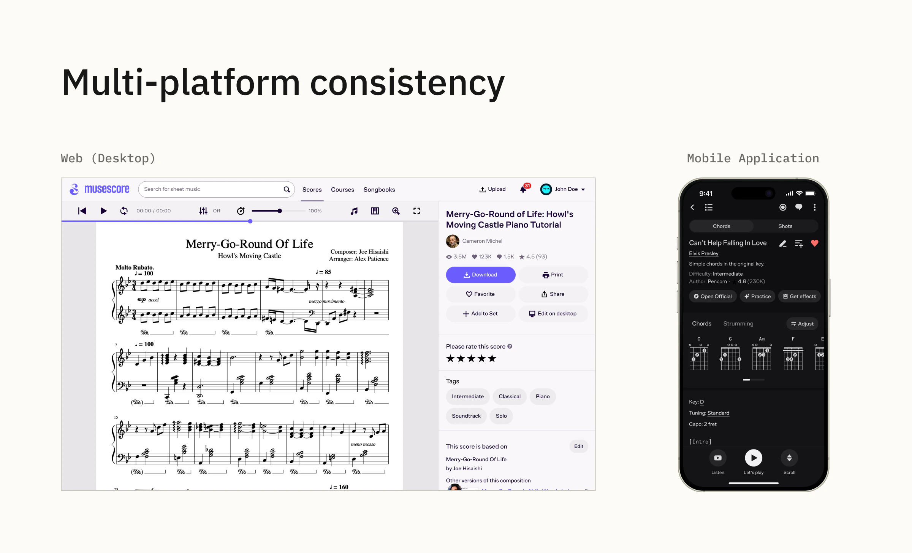

Muse · Icon system · Governance
Unified Icon System across Muse products
I led the consolidation of five disparate icon sets into a single scalable system for Muse products and platforms, aligned with Muse Group’s new visual identity. The icon count fell from 2,032 to 268 (−87%), and the refreshed design contributed to a 10% increase in click-through rate.
Overview
How I consolidated five disparate icon sets for Muse products and platforms into a single scalable system aligned with Muse Group’s new visual identity.
2,032 original icons · 5 sets → 268 icons · 87% reduction · +10% click-through rate
My role: Icon system designer and owner. I led the inventory, developed the visual direction, redrew the core set, formalised the construction rules and continue to own new icon requests.
01 — The fragmentation problem
The old icon ecosystem had no single visual language or source of truth. Filled and outlined icons were mixed inside products, sizing and scaling rules differed, visual quality depended on the author, and one product maintained three separate icon libraries for different platforms or bundles.
The same metaphor could therefore exist several times and require several independent maintenance paths.
The problem was not just inconsistency — the same work was being repeated across products.

02 — 2,032 icons became 268
I manually collected the existing icons, compared the five sets and grouped them by shared metaphor.
The inventory reduced 2,032 icons to 268, eliminating duplicate representations while retaining the metaphors needed across products and platforms.
This was an 87% reduction in the number of icons to maintain.
2,032 icons · 5 disparate sets → 268 icons in one scalable system (−87%)
03 — Finding a visual language that worked for both brand and UI
During the Muse rebrand, an external branding agency explored several icon directions. The concepts had strong brand expression, but they were too detailed for real interface sizes: when reduced, details collapsed and the symbols lost clarity.
I proposed an alternative direction built specifically for UI use.
Muse uses two very different typefaces: Muse Display, an expressive accent face, and Muse Sans, a practical interface grotesk. A conventional outline style worked with Muse Sans but did little to connect the interface with Muse Display.
I explored the characteristic shapes of both typefaces and developed a predominantly filled, simplified icon language with a contrast between sharp angles and rounded forms.
I refined the direction with the Brand Director, then continued the remaining work independently once the system was established.

04 — Turning the direction into a system
Before scaling production, we tested the new icons on key screens of two core products and adjusted the style in real interface context.

I then redrew the complete core set and formalised the rules needed to keep future icons consistent.
The system uses a 20×20 px base grid with a 16 px safe area. The main working size is 20 px, with 16 px as the recommended minimum and 24 px for larger standard UI use.

Construction guidance covers simplification, optical compensation, centering, line weight, corner treatment, crossed-out states, repeated arrow geometry and form joints. Usage rules also define semantic distinctions such as chevron for navigation and caret for local expand/collapse or dropdown behaviour.
Principle: reduce the form as far as possible without losing the metaphor. Brand character is added only when it does not make the symbol worse.

05 — One predictable source for design and development
The final library replaced fragmented local sets across the Muse design ecosystem.
Icons are organised into functional groups and include synonym tags in their descriptions, so designers can find an existing metaphor even when they search using a different term.
Developers built a parser to consume the published assets from the same source.
New icons follow a controlled flow:
Request → context → metaphor research → design & review → naming/tags → publish
This keeps the system consistent without making the maintainer a bottleneck. In everyday work, designers usually know where to search and can reuse existing icons without assistance.

06 — One scalable system across products and platforms
The system was designed to support Muse products and platforms as they adopted the new visual identity.
Instead of maintaining five separate icon sets, teams could reuse a governed source with shared metaphors, rules and assets.
What became simpler: one source to maintain, one place to search and one controlled visual language across the ecosystem.
The updated icon design also contributed to a 10% increase in click-through rate.

Outcome
1 scalable system replaced five disparate icon sets.
268 icons now live in the maintained shared library.
87% fewer icons need to be maintained.
+10% click-through rate followed the updated icon design.
My contribution: inventory, visual direction, complete core-set redraw, system rules, taxonomy and ongoing governance.
Desktop music-editor applications remain outside this system because their teams, technology and dense interface requirements follow a separate design ecosystem.